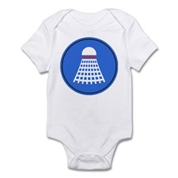

Etudiante en informatique à l'Université Paul Sabatier de Toulouse, j'ai choisi le master Images et Multimédia qui ouvre les portes vers des applications de l'informatique variées (son, images, 3D) et à la pointe de la technologie.
J'aime la photographie, les voyages, les cocktails et la bonne bouffe ;).


Né dans la petite bourgade de St-Gaudens en l'an 1993, Lucien grandit dans la ville de Tarbes.
Une enfance douce et paisible amène Lucien à se tourner vers l'informatique en 2012. Il trouve alors sa voie en découvrant l'analyse et le traitement d'image.
Plus tard, il trouve ses préférences dans l'audio numérique et le traitement d u signal.
Passionné de rugby mais aussi travailleur acharné, il trouve alors un peu de réconfort dans les délicieux cafés proposés par les distributeurs de la Faculté des Sciences de l'Université Paul Sabatier Toulouse 3.

Originaire de Franche-Comté, je suis venu à Toulouse pour découvrir le monde de l'informatique, après avoir suivi des cours
d'intelligence artificielle et d'imagerie, j'ai choisi de m'orienter dans le domaine de l'imagerie et de l'audio-numérique.
Cette branche de l'informatique permet de travailer avec des outils à la pointe de la technologie.
Intéressé, motivé et autonome, j'aime également les activités sportives, collectifs et individuels, en particulier Badminton et Handball.
